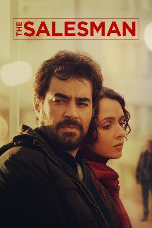

#7147 The Salesman
Auszeichnungen: 1 Oscars gewonnen
 
 IMDB-Wertung: 7.9 / 10
IMDB-Wertung: 7.9 / 10  Metascore: 0
Metascore: 0 
Fluchtartig müssen Emad und Rana ihre Wohnung verlassen. Durch eine Beschädigung des Fundaments droht das Haus einzustürzen. Ein Bekannter stellt dem jungen Paar seine leerstehende Wohnung zur Verfügung, ein seltener Glücksfall in einer dicht besiedelten Stadt wie Teheran. Als Rana im Badezimmer von einem Unbekannten überrascht wird, erfahren sie, dass die Vormieterin neben persönlichen Gegenständen auch einen zweifelhaften Ruf hinterlassen hat. Rana weigert sich, die Polizei einzuschalten oder auch nur über den Vorfall zu sprechen. Also macht sich Emad selbst auf die Suche nach dem Täter. Zunehmend verstrickt sich das Paar in einem Geflecht aus Scham und Schuldzuweisungen und droht schließlich daran zu zerbrechen
Jahr: 2016
Dauer: 123 Minuten
FSK: 12
Land: Iran Studio: Prokino FilmverleihTonspuren:
Untertitel: Deutsch,
Auflösung: 1080p (1920x1040) Größe: 8007 MB
Genre: Thriller, Drama
Regisseur: Asghar Farhadi
Drehbuch: Asghar Farhadi
Soundtrack:
Darsteller:
- Taraneh Alidoosti als Rana Etesami
- Shahab Hosseini als Emad Etesami
- Babak Karimi als Babak
- Alireza Rofougaran als Mr. Alimoradi, Neighbor , uncredited
- Mina Sadati als Sanam
- Farid Sajjadi Hosseini als The man
- Sam Valipour als Sadra
- Mojtaba Pirzadeh als Majid
- Shirin Aghakashi als Esmat
- Maral Bani Adam als Kati
- Emad Emami als Ali
- Ehteram Boroumand als Mrs. Shahnazari
- Mehdi Koushki als Siavash
- Sahra Asadollahe als Mojgan
Datei: X:\2016(N-Z)\Salesman, The (2016, FSK12, 1920x1040).mkv seit 29.09.2017
Festplatte: HD 2016(A-Z)
 Es gibt insgesamt 182 Filme in der Gruppe '2016(N-Z)'
Es gibt insgesamt 182 Filme in der Gruppe '2016(N-Z)'